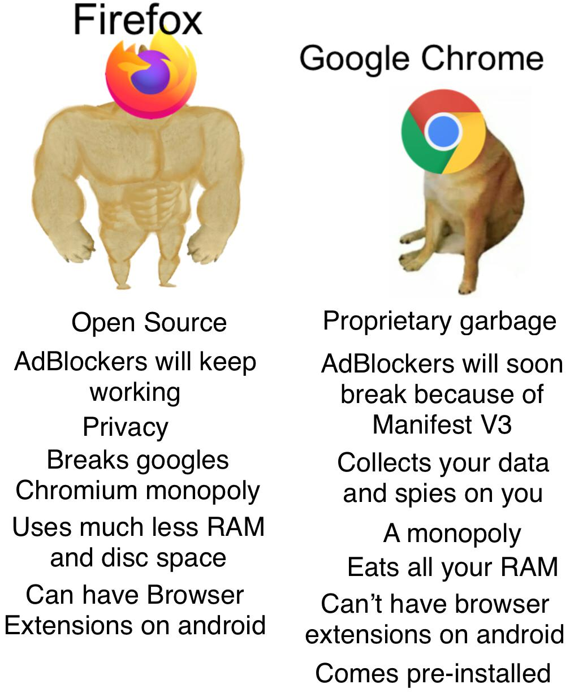

Fundamentos de la Web
Presentación
Navegadores Web
Un navegador web es el programa o aplicación que utilizas para acceder y visualizar sitios web en Internet.
Actúa como un intérprete que traduce el código de las páginas web (HTML, CSS, JavaScript) en el contenido visual
e interactivo
que ves en tu pantalla. Es tu ventana al mundo digital.
Ejemplos Comunes
- Google Chrome: El navegador más popular del mundo, conocido por su velocidad, su ecosistema de extensiones y
su integración con los servicios de Google.
- Mozilla Firefox: Un veterano de la web, enfocado en la privacidad del usuario y desarrollado por una
organización sin fines de lucro.

- Microsoft Edge: El sucesor de Internet Explorer, reconstruido con la misma tecnología de Chrome (Blink) para
ser más rápido y moderno.
- Safari: El navegador predeterminado en todos los dispositivos Apple (iPhone, iPad, Mac), optimizado para su
ecosistema.
Motores de Navegador
El motor de un navegador es su componente de software más crucial; es el verdadero "cerebro" que hace todo el
trabajo pesado.
Su función es tomar el código fuente que recibe de un servidor y "renderizarlo", es decir, dibujarlo en tu
pantalla para que
puedas interactuar con él.
Se compone principalmente de dos partes:
- Motor de Renderizado (Layout Engine): Interpreta el código HTML (la estructura) y el CSS (los
estilos) para construir el diseño visual de la página.
- Intérprete de JavaScript (JavaScript Engine): Procesa y ejecuta el código JavaScript para añadir
interactividad, animaciones y funcionalidades dinámicas.
Ejemplos de Motores
- Blink: Usado por Chrome, Edge, Opera.
- Gecko: Motor de Firefox.
- WebKit: Motor original de Apple, usado en Safari.
- V8: Motor de JavaScript de Google (Chrome, Node.js).
Protocolo HTTP
El Protocolo de Transferencia de Hipertexto (HTTP) es el conjunto de reglas que define cómo se comunican los
navegadores (clientes) y los servidores web.
Cuando introduces una dirección web, tu navegador envía una solicitud HTTP al servidor pidiendo los recursos de
esa página.
El servidor procesa la solicitud y devuelve una respuesta HTTP con el contenido (HTML, imágenes, etc.) y un
código de estado.
HTTP vs. HTTPS:
- HTTP: La comunicación viaja en texto plano. Es vulnerable.
- HTTPS: Versión segura, cifra toda la comunicación con SSL/TLS. Se identifica por el candado 🔒 en la barra
de direcciones.

Puertos de Internet
Si una dirección IP es como la dirección de un edificio, un puerto es el número de la oficina específica.
Es un punto final de comunicación numerado que permite manejar múltiples servicios en una red.
Ejemplos de Puertos Estándar
| Puerto |
Uso |
| 80 |
HTTP |
| 443 |
HTTPS |
| 21 |
FTP |
| 25 |
SMTP (correo) |
Direcciones de Internet
Para que los dispositivos se encuentren en Internet, utilizan direcciones únicas:
- Dirección IP: Etiqueta numérica única asignada a cada dispositivo conectado (ej: 142.250.78.227).
- Nombre de Dominio: Alias amigable como www.google.com que apunta a una IP.
- DNS: Es la “agenda telefónica” de Internet, traduce nombres de dominio en direcciones IP.
Ejercicios de Tarea
- Identifica tu Motor: Abre tu navegador, busca la versión que usas e investiga qué motor utiliza
(Blink, Gecko, WebKit...).
- Inspecciona la Red: Ve a tu sitio de noticias, usa la pestaña "Red" en las herramientas de
desarrollador y observa las solicitudes.
- Usa la Terminal: Ejecuta
ping google.com y nslookup google.com para
observar direcciones IP y DNS.
Preguntas de Reflexión
- Explica por qué nunca debes introducir tu contraseña en un sitio que no use HTTPS.
- Si un amigo tiene un servidor en el puerto 8080 con IP 190.15.22.8, ¿qué dirección pondrías en el navegador
para acceder?
Enlaces de Interés
LINK
Repositorio en Github